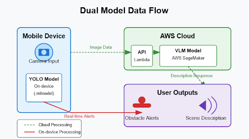

Architecture & Pipeline
Pipeline Overview
The SafeWalk pipeline consists of five major components:
- Data Collection: Images from public datasets and real-world captures with new and existing object classes.
- Preprocessing: Label validation, data augmentation, Roboflow management.
- Model Training: YOLOv5s model fine-tuning with 80/10/10 split for training, validation, and testing.
- Deployment: Optimized model exported to ONNX/TFLite for on-device inference.
- User Feedback Loop: Targeted retraining and fine-tuning based on app usage and feedback.
.png)
Detailed Architecture
Our architecture integrates both object detection and natural language processing capabilities to provide real-time, multimodal interaction. Key elements include:
- Cloud Components: A pre-trained Visual Language Model (VLM) is hosted on AWS SageMaker with a real-time inference endpoint. AWS Lambda functions and API Gateway manage mobile communication through POST requests with base64-encoded images.
- Error Handling: Includes automatic retry logic, input validation, and detailed logging to ensure reliability.
- Prompt Engineering: Customized prompts tailored for visually impaired navigation to control verbosity and relevance of the response.
- Training Infrastructure: Datasets stored in AWS S3 and used for YOLO model fine-tuning. The trained model is converted to Core ML (.mlmodel) for iOS deployment and TorchScript for Android testing.
- On-device Processing: The mobile app integrates the YOLO model for low-latency detection and an alert engine for real-time feedback. The VLM component runs in the cloud for heavier processing.
This hybrid architecture balances cloud and on-device workloads for maximum efficiency and real-time performance.
